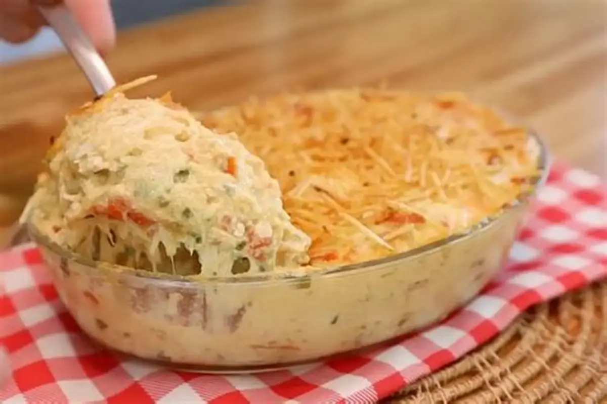

aqui teremos alguns tipos de receitas de familia que foram passados de gerações para gerações
Bolo De Laranjaingredientes
1/2 xícara de chá óleo
1 laranja
3 ovos
1 e 1/2 xícara de chá açúcar
1 e 1/2 xícara de chá Farinha de trigo
1 colher de sopa Fermento em pó
 Bolo De Cenoura
Bolo De Cenoura
ingredientes
1/2 xícara de chá óleo
2 cenoura pequenas
3 ovos
1 e 1/2 xícara de chá açúcar
1 e 1/2 xícara de chá Farinha de trigo
1 colher de sopa Fermento em pó

vamos ir para receitas salgadas
Fricasseingredientes
400g de file de frango
1 lata de milho
2 caixa de creme de leite
1 pote de reiqueijão
1 cebola
1 dente de alho
200g de mussarela (ralada ou em fatias)
1 saquinho de azeitona

Parmegiana De Frangoingredientes
500g de file de frango
2 sache de massa de tomate
2 ovos
1 cebola
1 dente de alho
200g de farinha de trigo
200g de farinha de rosca(ou panko)
200g de queijo
tempero a gosto
 Lasanha ao Molho Rose
Lasanha ao Molho Rose
ingredientes
1 pacote de massa de lasanha
2 sache de massa de tomate
1 lata de milho
2 caixa de creme de leite
300g de presuto
300g de queijo
700g de carne moida
300g de linguiça
200g de farinha
150 ml de leite
40g de manteiga ou 2 colheres de sopa de manteiga
temperos a gosto